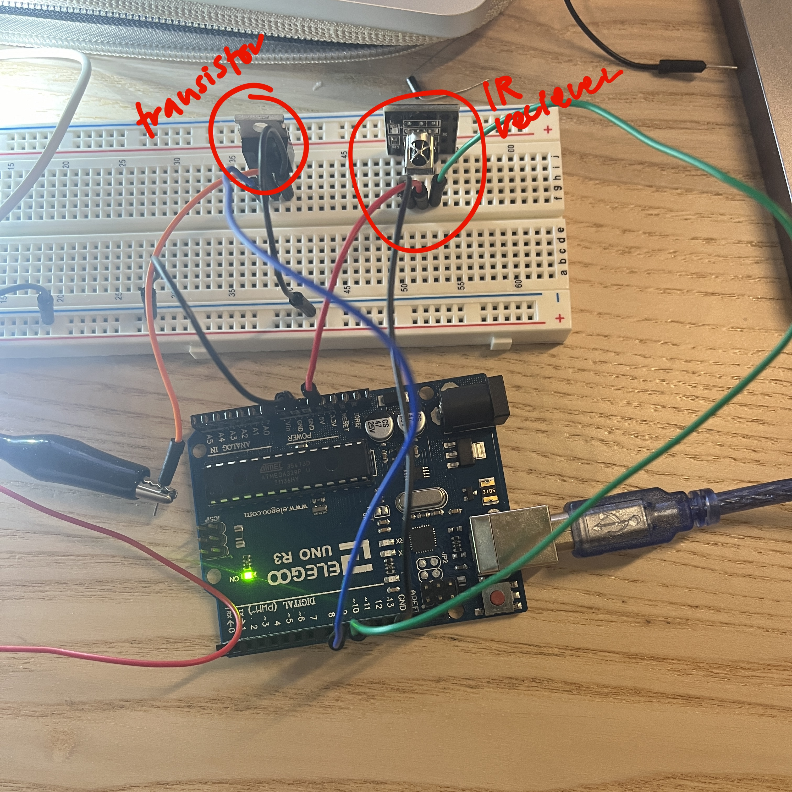
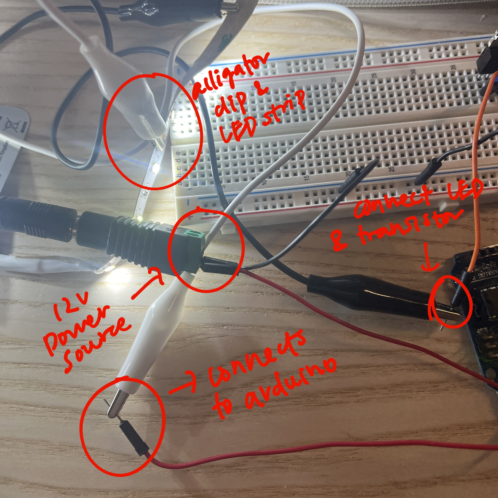
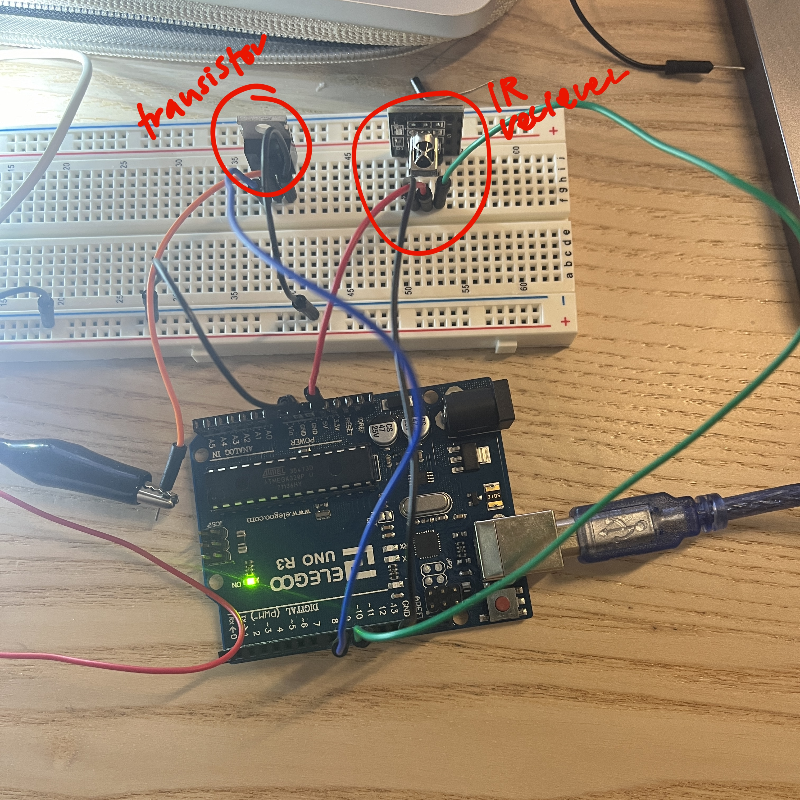
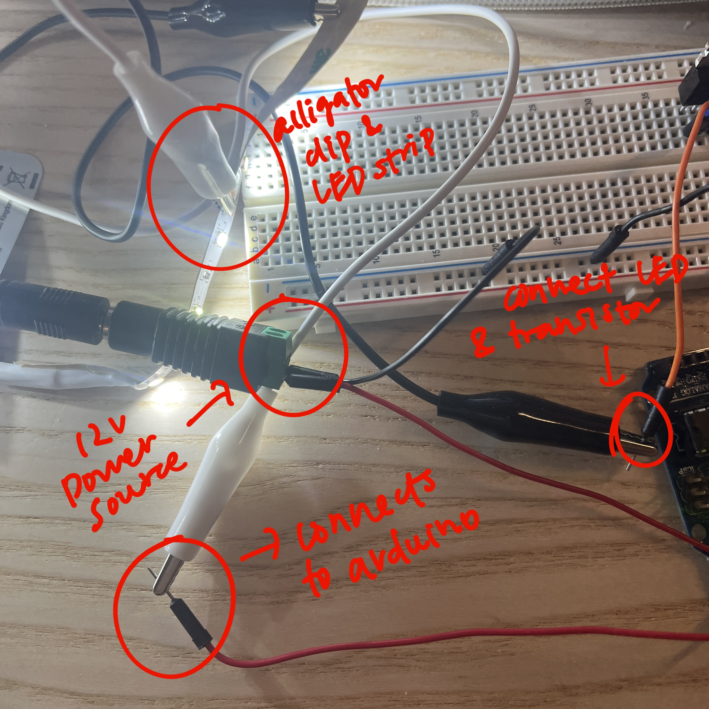
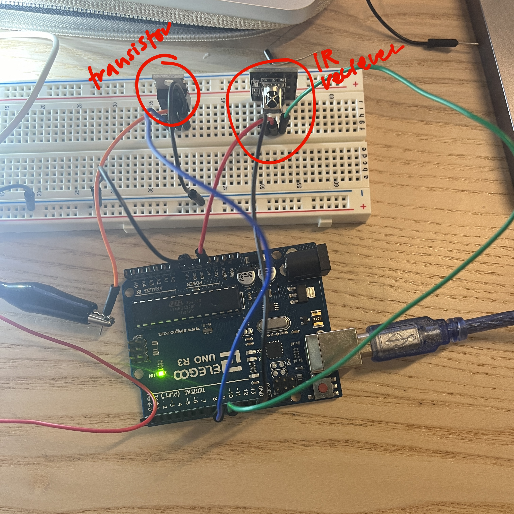
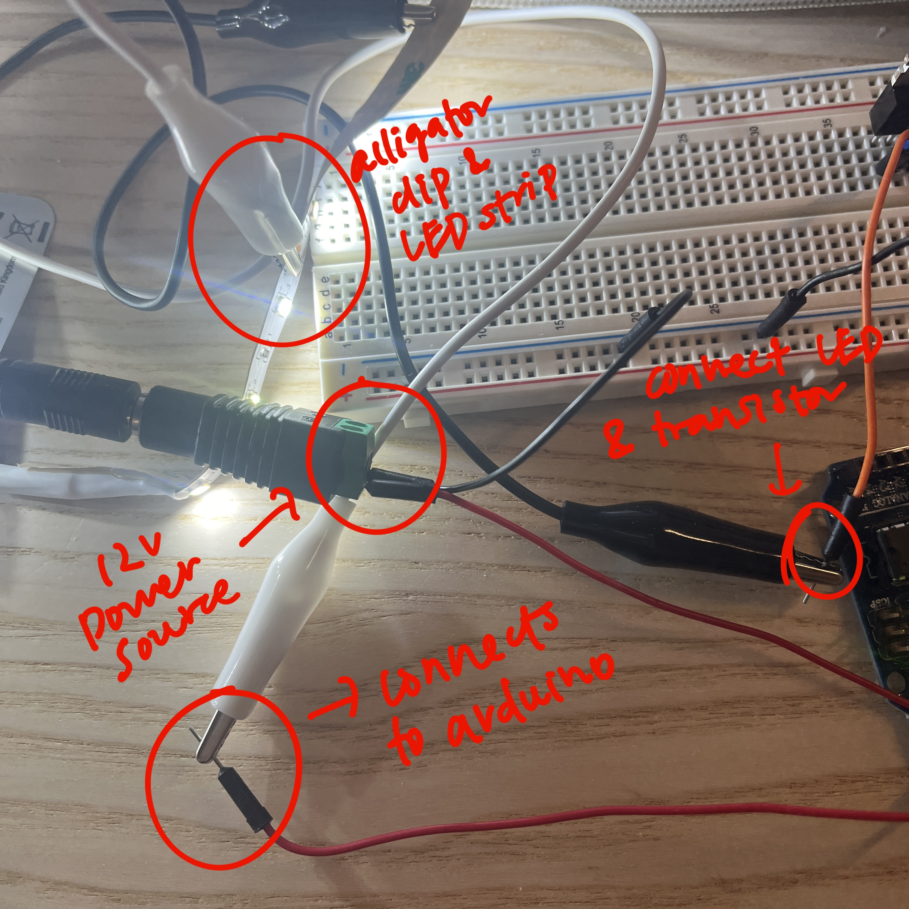
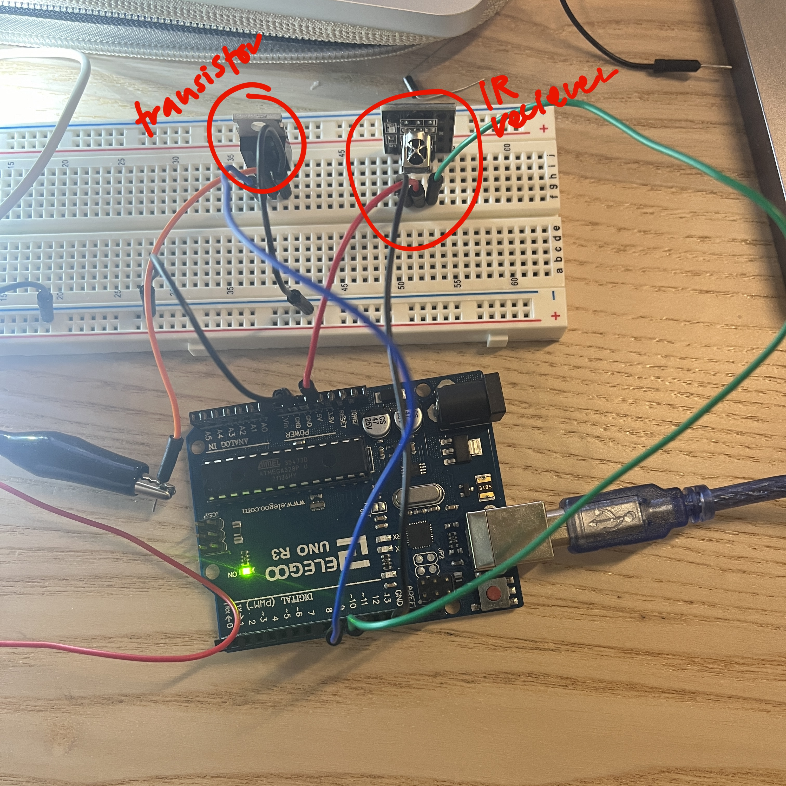
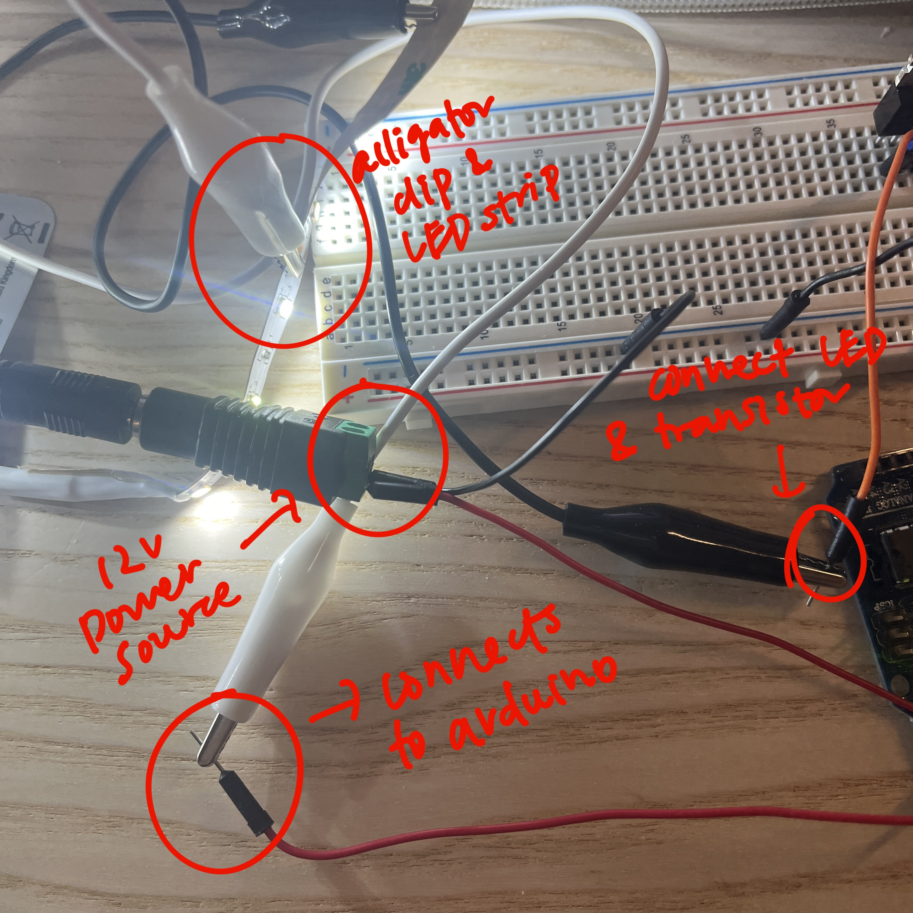

Circuit Image
 







// adds the IR remote library to be able to use the remote
#include
// establish a new integer value for the LED strip pin
int light = 9;
// establish a new integer value for the IR receiver pin
int remotePin = 11;
// creating a new instance of IRrecv to assign it with the correct pin
IRrecv irrecv(remotePin);
// runs the following code once to start the rest of the code
void setup() {
//sets data rate in baud and starts to send in commands
Serial.begin(9600);
// starts the receiver to begin receiving signals from the remote
IrReceiver.begin(remotePin, ENABLE_LED_FEEDBACK);
// sets the pin for the LED strip to be an output
pinMode(light, OUTPUT);
}
// loop function runs the following actions so long as the appropriate remote buttons are selected
void loop() {
// if statement to confirm that a signal is sent to the receiver from the remote
// if this requirement is fulfilled, then the following lines will print in the serial monitor
if (IrReceiver.decode()) {
// prints out the raw information into the serial monitor, this includes the commands and
// code that is used to identify the buttons on the remote
IrReceiver.printIRResultShort(&Serial);
// prints out how this data was received by the IR receiver into the serial monitor
IrReceiver.printIRSendUsage(&Serial);
// allows the receiver to get the next value from the remote
IrReceiver.resume();
}
// if statement for when the command from the right button matches 0x9
// (which should only map to the upwards arrow)
if (IrReceiver.decodedIRData.command == 0x9){
// sets the brightness of the LED strip
analogWrite(light, 255);
// short delay time to keep light running
delay(1);
}
// if statement for when the command from the right button matches 0x9
// (which should only map to the downwards arrow)
if (IrReceiver.decodedIRData.command == 0x7){
// sets the brightness of the LED strip
analogWrite(light, 10);
// short delay time to keep light running
delay(1);
}
}

Based on the datasheet, the maxiumum amount of current between pins 2 (drain) and 3 (source) is 1 μA.
The following link contains the datasheet for the 100uF capacitor: Electrolytic Radial E 100uF/50V
A 100 uF capacitor is used in this circuit to help smooth out the power being delivered to the motors and also helps to create the right sound when the motors are active.
For the pseudocode, I referenced the following video to help me understand how the code for a DC motor with an H-bridge works: DC Motor Control with an H-Bridge and Arduino (Lesson #17)
My pseudocode is adjusted to the requirements of the question using 2 motors.
DECLARE integer for motor 1 forward motion
DECLARE integer for motor 1 backward motion
DECLARE integer for motor 2 forward motion
DECLARE integer for motor 2 backward motion
SETUP{
SET motor 1 forward as OUTPUT
SET motor 1 backward as OUTPUT
SET motor 2 forward as OUTPUT
SET motor 2 backward as OUTPUT
}
LOOP{
DIGITALWRITE motor 1 forward HIGH
DIGITALWRITE motor 1 backward LOW
DIGITALWRITE motor 2 forward HIGH
DIGITALWRITE motor 2 backward LOW
DELAY for some time to keep the motors spinning
DIGITALWRITE motor 1 forward LOW
DIGITALWRITE motor 1 backward HIGH
DIGITALWRITE motor 2 forward LOW
DIGITALWRITE motor 2 backward HIGH
DELAY for some time to keep the motors spinning
DIGITALWRITE motor 1 forward HIGH
DIGITALWRITE motor 1 backward LOW
DIGITALWRITE motor 2 forward LOW
DIGITALWRITE motor 2 backward HIGH
DELAY for some time to keep the motors spinning
DIGITALWRITE motor 1 forward HIGH
DIGITALWRITE motor 1 backward LOW
DIGITALWRITE motor 2 forward HIGH
DIGITALWRITE motor 2 backward LOW
DELAY for some time to keep the motors spinning
DIGITALWRITE motor 1 backward HIGH
DIGITALWRITE motor 1 forward LOW
DIGITALWRITE motor 2 forward LOW
DIGITALWRITE motor 2 backward LOW
DELAY for some time to keep motor 1 spinning backwards and motor 2 off
DIGITALWRITE motor 1 forward HIGH
DIGITALWRITE motor 2 forward LOW
DIGITALWRITE motor 2 forward LOW
DIGITALWRITE motor 2 backward LOW
DELAY for some time to keep motor 1 spinning forward and motor 2 off
}